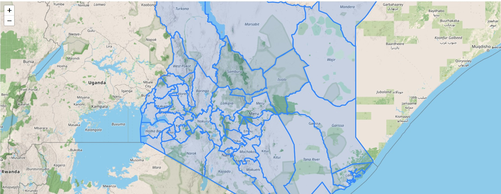
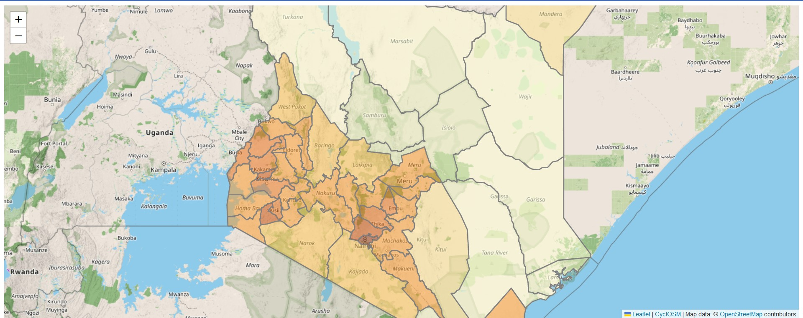
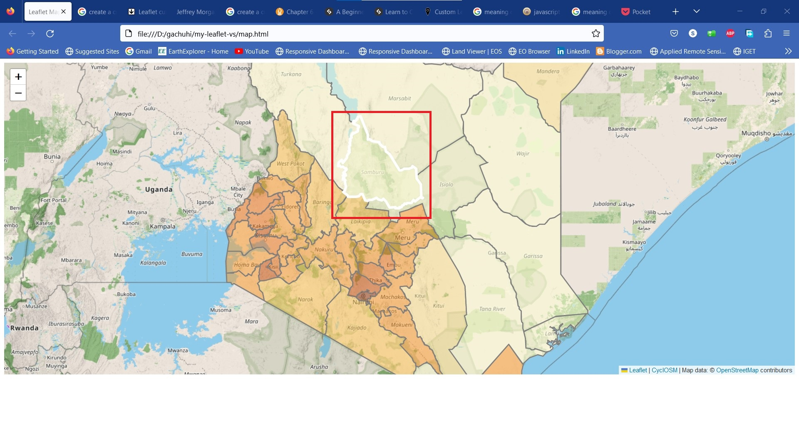

Chapter 7 Creating an interactive choropleth map
7.1 What is a choropleth map?
We will now move from markers to something larger than life –choropleth maps. What the heck are choropleth maps? You may ask. Geographers will roll their eyes over this term because they have come across it innumerable times throughout their career. However, for the sake of new readers, a choropleth map is a map whose geographical areas or regions are colored, shaded or patterned in relation to a data variable. If during election time you have seen a map that has drapped the winning candidate in (a) particular state(s) with their party theme colors, then that’s a choropleth map. Most population maps are also choropleth maps. In this chapter, we will create a choropleth map of Kenyan counties, and make it interactive by leveraging the area and population characteristics of each county.
7.2 Creating a choropleth map: the start
Obviously by now, without going into much details, you can now create a basic Leaflet map blindfolded. Anyway, seeing is believing, so lets start what we have done several times over. Create another new JavaScript file called interactive-choropleth.js. To break the monotony, we shall use a different tile layer. Remember that Leaflet has several tile layer servers, and CyclOSM, used in this chapter is just one among many.
var map = L.map('myMap').setView([0.3556, 37.5833], 6.5);
L.tileLayer('https://{s}.tile-cyclosm.openstreetmap.fr/cyclosm/{z}/{x}/{y}.png', {
maxZoom: 20,
attribution: '<a href="https://github.com/cyclosm/cyclosm-cartocss-style/releases" title="CyclOSM - Open Bicycle render">CyclOSM</a> | Map data: © <a href="https://www.openstreetmap.org/copyright">OpenStreetMap</a> contributors'
}).addTo(map); // the CyclOSM tile layer available from Leaflet servers
Now to the big part –the GeoJSON files. We would like to mention it was quite a hustle to set up the GeoJSON file to be in a format accessible with JavaScript’s Fetch API. Only when we converted the GeoJSON to json were we able to successfully view it using fetch. The raw json file for our Kenyan counties which we shall use in creating a choropleth map is available from here or here.
Let’s fetch the counties json file.
fetch("https://raw.githubusercontent.com/sammigachuhi/geojson_files/main/counties_json.json")
.then((response) =>{
return response.json()
})
.then((data) => {
L.geoJson(data, {style: style}).addTo(map);
})
.catch((error) => {
console.log(`This is the error: ${error}`)
})
So far, you should get a result like below.
knitr::include_graphics(rep("D:/gachuhi/my-leaflet/images/kenya_json.jpg"))
7.3 Coloring the counties
Alright, we have been able to load our json file to a Leaflet map. However, it looks dull and provides no meaningful information to the casual observer. When making maps, aim to provide information at lightning speed. That is, inform the reader at fast glance. The code snippets that follow have been heavily borrowed from Volodymyr’s interactive choropleth tutorial.
First, let’s create a function that sets a hex colour code for each population category. We used color brewer for this.
Take a look at this code and we shall explain.
//// Adding some color
function getColor(d) {
return d > 1400 ? '#8c2d04' :
d > 700 ? '#cc4c02' :
d > 400 ? '#ec7014' :
d > 100 ? '#fe9929' :
d > 50 ? '#fec44f':
d > 25 ? '#fee391':
'#ffffd4';
}
The above function uses a question mark ? to act as the if...else statement. In JavaScript, this is known as a ternary operator. A ternary operator? What’s that? How does it work?
For a ternary operator, any statement to the right of the ? is returned as true if it agrees with the value to the left of the ?. Reread that last statement. If the value to the right of the ? is false, then the value to the right of the colon : is returned. Also reread that last statement.
If it still sounds fuzzy, the below image adapted from FreeCodeCamp should help.
knitr::include_graphics(rep("D:/gachuhi/my-leaflet/images/ternary.png"))
In other words, the ternary operator is a short form of writing the if...else statement over several lines. Look at the below code which is simply the if...else version of the ternary operator we’ve used above. Definitely, the ternary operator wins the day in terms of brevity.
function getColor(d) {
if (d > 1400) {
return '#8c2d04';
} else if (d > 700) {
return '#cc4c02';
} else if (d > 400) {
return '#ec7014';
} else if (d > 100) {
return '#fe9929';
} else if (d > 50) {
return '#fec44f';
} else if (d > 25) {
return '#fee391';
} else {
return '#ffffd4';
}
}
Now that we’ve created the function of setting colors to our json file on Leaflet, we next also have to create a function that applies the color designation to the locations in the GeoJSON file itself. Luckily, we have the style option from Leaflet which is a function for precisely styling GeoJSON lines and polygons alone. We saw it in Chapter 5 and we shall also use it here.
var style = ((feature)=> {
return {
fillColor: getColor(feature.properties.Pop_Density),
weight: 2,
opacity: 1,
color: 'gray',
fillOpacity: 0.5
}
})
The above is an arrow function. Unlike regular JavaScript function declarations which are in the format of function <name of function> (<parameter>), we remove the function keyword, enclose everything in brackets and put an arrow => between the parameter brackets and function body. That’s just it. Arrow functions aren’t so hard!
Remember we assign the arrow function to a variable called var style since we will parse it to the L.geoJson class.
Finally, we add the style variable to the style option of L.geoJson class.
fetch("https://raw.githubusercontent.com/sammigachuhi/geojson_files/main/counties_json.json")
.then((response) =>{
return response.json()
})
.then((data) => {
L.geoJson(data, {style: style}).addTo(map);
})
.catch((error) => {
console.log(`This is the error: ${error}`)
})
Since the style option is a key (and also a function), the value will be the var style which we created. This value is in and by itself a function that iterates over every county because of the getColor(feature.properties.Pop_Density) contained in it as the fillColor value!
Enough JavaScript for one day!
knitr::include_graphics(rep("D:/gachuhi/my-leaflet/images/choropleth-map.jpg"))
Our choropleth map is beginning to take shape.
7.4 Highlight features
Going on from where we last left, we would like the choropleth map to highlight any county that the screen pointer (or mouse) hovers over. Additionally, upon clicking, the map should zoom to the clicked county as well as display its attributes. The counties should also be reset to their default characteristics when the screen pointer hovers out.
Alright. It seems like we have our hands full.
Let’s start simple, and scale upwards in terms of complexity.
Remember the fetch API we had used in retrieving our json file? We will tweak it a bit by adding the var geojson just before calling the L.geoJson class. We shall parse the variable var geojson to the L.geoJson class. We shall explain why we are assigning L.geoJson to a variable (var geojson) when we know very well it can work alone, as seen in the last two previous chapters.
fetch("https://raw.githubusercontent.com/sammigachuhi/geojson_files/main/counties_json.json")
.then((response) =>{
return response.json()
})
.then((data) => {
var geojson;
geojson = L.geoJson(data, {
style: style,
--snip--
})
We had initially mentioned that we wanted the county hovered over to be highlighted. The following code will highlight with a white hue the county hovered over while also seemingly popping it out above the rest.
geojson = L.geoJson(data, {
style: style,
onEachFeature: ((feature, layer) => {
layer.on('mouseover', ((e) => {
var layer = e.target;
layer.setStyle({
weight: 5,
color: '#FFFFFF',
dashArray: '',
fillOpacity: 0.7
});
layer.bringToFront();
}))
The purpose of on method is to add an event listener. Event listeners in JavaScript are functions that run a code when the browser user interacts with the browser in a specific way. Now what on method does is that it triggers the event listener mouseover for each county in our GeoJSON layer. The mouseover event is what makes our counties be highlighted and ‘pop’ out when a screen pointer is over them.
Since the change in state of an element in HTML is known as an event (denoted as e in our case), the e.target property returns the element on which the event is occurring on. Since it’s a particular county in our case, we proceed to change its symbology through the parameters in the setStyle function. Thereafter we use the bringToFront method to make the element in which the event has happened on to ‘pop’ out above the rest.
Remember we had mentioned we also want the counties to be reset to their default status when one hovers out to some other county or outside the map altogether. The following code does the job.
layer.on('mouseout', function() {
geojson.resetStyle(this);
})
We use the resetStyle function to return the layer to default settings but there is a twist. In the resetStyle case, we add the argument this in parenthesis to refer to the element that was received. In other words, when the mouse ‘hovers out’ of a county, the element will revert to its original symbology.
Before, we end this monologue, we ensure we pass the variable geojson to resetStyle function or else it won’t work. This appears to be the modus operandi for resetting styles in Leaflet as shown in this Stack Overflow question and here.
Finally, we mentioned we want to zoom to a particular county upon clicking it. The following code fits our map to the bounds of the particular county that was clicked. Note that fitBounds is parsed getBounds which gets the boundaries of the county clicked upon. The browser is able to identify the county clicked upon through the help of the e parameter and e.target.
layer.on('click', ((e) => {
map.fitBounds(e.target.getBounds())
}))
knitr::include_graphics(rep('D:/gachuhi/my-leaflet/images/highlightable-map.jpg'))
Your code within the fetch API should look like this.
fetch("https://raw.githubusercontent.com/sammigachuhi/geojson_files/main/counties_json.json")
.then((response) =>{
return response.json()
})
.then((data) => {
var geojson;
geojson = L.geoJson(data, {
style: style,
onEachFeature: ((feature, layer) => {
layer.on('mouseover', ((e) => { // highlight county on mouse hover
var layer = e.target;
layer.setStyle({
weight: 5,
color: '#FFFFFF',
dashArray: '',
fillOpacity: 0.7
});
layer.bringToFront();
}))
layer.on('mouseout', function () { // return to original symbology upon mouse hover out
geojson.resetStyle(this);
})
layer.on('click', ((e) => { // Zoom to county upon clicking it
map.fitBounds(e.target.getBounds())
}))
})
}).addTo(map);
})
.catch((error) => {
console.log(`This is the error: ${error}`)
})
7.5 Creating a custom info
Our choropleth map works perfectly but lacks some interactivity. How about complementing it with an information interface next to it? That would make our choropleth map both cute and informative. Custom info controls are one way to do that. Think of a control as an UI element that allows interactivity with the map. For our choropleth map, we want the custom control info to provide details of the name, total population and population density of each county.
// Add control
var info = L.control();
info.onAdd = function (map) {
this.div = L.DomUtil.create('div', 'info');
this.update();
return this.div;
};
// Method that we will use to update the control based on feature properties passed
info.update = function (props) {
this.div.innerHTML = '<h4>Kenya Population Density</h4>' + (props ?
'<b>' + props.ADM1_EN + '</br><br />' + 'Total Population' + '<br>' + props.County_pop + '<br> <br>' +
props.Pop_Density + ' people / km<sup>2</sup>': 'Hover over state')
};
info.addTo(map);Okay. Let’s go through the above code bit by bit as best as we (hopefully!) can.
var info = L.control();
The above creates a variable info that holds the base class L.control() for all map controls. For example, in L.control.zoom, the L.control class creates a zoom control in the map.
info.onAdd = function (map) {
this.div = L.DomUtil.create('div', 'info');
this.update();
return this.div;
};The above code returns the DOM element for the control and creates a <div> of class info. This is done through the help of L.DomUtil which, according to the Leaflet website, provides utility functions to work with the DOM2. Actually, this new <div> of class info is created when you fire up your browser but will only exist in your browser. Don’t expect it to magically appear in your static map.html file.
knitr::include_graphics(rep('D:/gachuhi/my-leaflet/images/div-info-element.jpg'))
Trust me it wasn’t there before introducing the function containing L.DomUtil. Moving on forward, this.update() simply updates the content of the custom info control with the attributes of every newly clicked county.
// Method that we will use to update the control based on feature properties passed
info.update = function (props) {
this.div.innerHTML = '<h4>Kenya Population Density</h4>' + (props ?
'<b>' + props.ADM1_EN + '</br><br />' + 'Total Population' + '<br>' + props.County_pop + '<br> <br>' +
props.Pop_Density + ' people / km<sup>2</sup>': 'Hover over state')
};
info.addTo(map);The above function updates the Leaflet map with the name, population and population density for each county. This function is passed to the variable info.update and thereafter added to the map using the method addTo. Inside this function exists the this.div.innerHTML. The purpose of innerHtml is to return the HTML content of an element. Since our map is rendered in a HTML page, the features are returned as HTML.
Because the custom control info is a UI element, we need to set up its symbology in our CSS file. Paste the following to your styles.css file.
You may ask, “I thought I don’t have to put CSS styles to Leaflet because it seems to come with all batteries included, style ’n all”.
I get your point, but remember we created a new <div> called info that appears when our browser is powered up. And since this <div class="info ..."> must appear when the browser is powered up, CSS styles must be used to define its looks.
.info {
padding: 6px 8px;
font: 14px/16px Arial, Helvetica, sans-serif;
background: white;
background: rgba(255,255,255,0.8);
box-shadow: 0 0 15px rgba(0,0,0,0.2);
border-radius: 5px;
}
.info h4 {
margin: 0 0 5px;
color: #777;
}
7.6 Create a legend
Having created a custom control info, the following code creates the legend.
var legend = L.control({position: 'bottomright'});
legend.onAdd = function (map) {
var div = L.DomUtil.create('div', 'info legend'),
grades = [0, 25, 50, 100, 400, 700, 1400],
labels = [];
// loop through our density intervals and generate a label with a colored square for each interval
for (var i = 0; i < grades.length; i++) {
div.innerHTML +=
'<i style="background:' + getColor(grades[i] + 1) + '"></i> ' +
grades[i] + (grades[i + 1] ? '–' + grades[i + 1] + '<br>' : '+');
}
return div;
}
legend.addTo(map);
Obviously the position of our legend is set using the position option in L.control({position: 'bottomright'});.
Apart from the other elements we discussed in our custom control info, we set the color interval of our legend through the grades array. The for loop that follows iterates through the grades array creating a color box for each interval.
Honestly, the for loop looks quite complicated and has been pasted as is from the Leaflet choropleth tutorial. The strangely looking &ndash within the for loop of creating colors is simply how a hyphen (-) is written in HTML. But anyway, getting back to the for loop, it essentially creates a range within each interval, such as 0 - 25, 25 - 50 and so on. This takes place after the ? ternary operator which was discussed earlier. Once it reaches the end of the loop, that is, it goes out of the range, the + is appended to the last value from our grades array. This last bit is made possible due to the : which returns values that are false in JavaScript.
The legend also needs its CSS properties or else it will not appear in the browser. The <div> class of info legend is also created when the browser fires up. You may be wondering why info legend and not just legend. Well, Golden Eye, the properties of .info class, such as background color and others are also inherited by the legend class by virtue of the browser reading the CSS in a top-down format. The legend class will only override those properties that also appear in the info legend class. We also specify the CSS properties for the color intervals and text through the .legend i class.
Here’s the CSS anyway.
.legend {
line-height: 18px;
color: #555;
}
.legend i {
width: 18px;
height: 18px;
float: left;
margin-right: 8px;
opacity: 0.7;
}
The legend is done and is finally added to the map.
knitr::include_graphics('D:/gachuhi/my-leaflet/images/choropleth-legend.jpg')
The full code files are available from here.
When creating choropleth maps, aim for challenging and impacting rather than merely informing.
7.7 Summary
This chapter was long and hard if not confusing. Nevertheless, here’s our take home from this chapter:
Choropleth maps are maps whose whose geographical areas or regions are colored, shaded or patterned in relation to a data variable.Good examples of choropleth maps are national population maps.
Ternary operators are short forms of the
if...elsestatement. In a ternary operator, any statement to the right of the?is returned as true if it agrees with the value to the left of the?. Conversely, any value to the right of the colon:is returned if the value after the?is false.styleis a special key in theL.geoJsonclass that applies custom styles to each layer in the GeoJSON file.mouseoveris an event listener that triggers a certain action when a screen pointer is over a certain feature.We can reset features back to their defaults using
resetStyle.The
L.control()class is the base class for enabling most Leaflet controls. For example, theL.control.zoomcreates the zoom controls.L.control()can also be used to customize the appearance and information displayed by the legend.
The Document Object Model (DOM) is the data representation of the objects that comprise the structure and content of a document on the web.↩︎